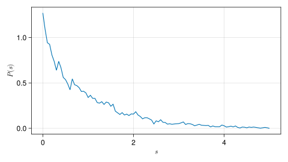
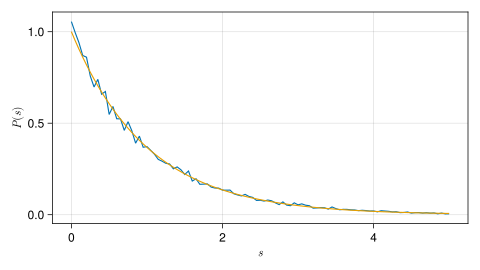

Tutorial
This section will guide you through everything you need to know for getting started with the SpectralStatistics.jl package.
To learn more about spectral statistics and quantum chaos in general the books Quantum Chaos: An Introduction by H.-J. Stöckmann and Quantum Signatures of Chaos by F. Haake are a good place to start.
Installation
SpectralStatistics can be installed using the Julia package manager. Simply run:
using Pkg; Pkg.add("SpectralStatistics")This will instal the package to your current environment. To use it run:
using SpectralStatisticsin your Julia session.
Core components
There are three major components of the package:
Types that represent spectral data, for example
UnfoldedSpectrumandRealSpectrum. These are subtypes of theDataSampleabstract type.Types that represent analytical models of spectral statistics for example
PoissonandGOE. These are subtypes of theModelabstract type.Functions that compute the spectral statistics for example
level_spacing_pdf. They can be used either to compute the spectral statistics from a spectrum by imputing the data or evaluate an analytical expression from a model.
The package also includes convenience codes for fitting the models to data and plotting.
Preparing and unfolding spectra
Infinite potential wells are usually one of the first example quantum systems one encounters when learning quantum mechanics. We will analyze the spectrum of a two-dimensional well, namely the rectangular quantum billiard. Let us take a rectangle with sides $a$ and $b$. The energy levels are given by
\[E_{n_x, n_y} = \frac{\pi^2}{2}\left(\left(\frac{n_x}{a}\right)^2+\left(\frac{n_y}{b}\right)^2\right),\]
where $n_x$ and $n_y$ are integer quantum numbers and the particle mass $m=1$ and $\hbar=1$. We will also fix $a=1$ and define the ratio $\chi=b/a$. We define a function that returns the first $N$ levels:
H(nx,ny,a,b) = 0.5*pi^2.0*( (nx/a)^2.0 + (ny/b)^2.0 )
function rectangle_spectrum(N; chi = 1.0*MathConstants.golden)
M = Int(round(10*chi*sqrt(N)))
spect = [H(i,j,1.0,chi) for i in 1:M for j in 1:M]
return sort(spect)[1:N]
endWe set the parameter $\chi$ to the golden ratio by default. Let us compute the spectrum of the first 50000 levels:
spect = rectangle_spectrum(50000)The SpectralStatistics.jl package uses the RealSpectrum container to represent raw spectral data. This is the data we would obtain form an experiment or a numerical simulation. We pass our data to the container:
real = RealSpectrum(spect)RealSpectrum([6.819728913394972, 12.474509051945848, 21.624135515029007, 21.89914261619731, 27.278915653579887, 35.09362960614936, 36.703549217831345, 46.2981465177524, 49.89803620778339, 51.95292665630328 … 195147.95351392683, 195154.95466509456, 195157.8230231368, 195160.41951171888, 195162.7524223028, 195163.95671701664, 195172.094621494, 195173.07546120507, 195176.23834529548, 195184.50469042303])Some spectral statistics may be computed directly from this data. Usually, to compare the universal statistical properties of the spectra of different systems, the spectra must first be normalized in an appropriate way. This process is called spectral unfolding. The density of states varies from system to system. The spectral staircase function number of levels up to some energy
\[N(E) := \#\{n|E_n<E\}.\]
We are mainly interested in the fluctuations of levels around the local mean that turn out to have universal properties that are related to the dynamics. One way to unfold the spectrum, is to fit a smooth curve $F(E)$ to the spectral staircase. This represents the integrated density of states. One of the common ways of unfolding the spectrum is to transform the spectral data by
\[e_n = F(E_n).\]
The new energies ${e_n}$ are called the unfolded energies. The function unfold_spectrum can be used to unfold a real spectrum. It returns a new spectrum of type UnfoldedSpectrum. Polynomials of n-th degrees are commonly used as unfolding functions. We will use a second degree polynomial to unfold the billiard spectrum. We simply call:
unfolded = unfold_spectrum(real, 2)UnfoldedSpectrum([1.7304337718739802, 3.165267902890798, 5.4868817772119165, 5.55666177465583, 6.9217202122444155, 8.904620866692046, 9.313121256933172, 11.7476534913204, 12.661090390147544, 13.182499098571578 … 49982.45121828218, 49984.24270748431, 49984.97667671628, 49985.64107847636, 49986.23803448438, 49986.546194952956, 49988.62855824935, 49988.879539758025, 49989.688872029874, 49991.80409828991])For convenience it is possible to call unfold_spectrum with an integer as the second parameter to use a polynomial as the fitting function. In general any julia function (its first parameter must be the energy) may be passed as the second parameter of unfold_spectrum and it will be automatically fitted and used as the unfolding function. We have unfolded the spectrum and can now continue with analyzing the spectral statistics.
Computing spectral statistics
Let us compute one of the most important and commonly used spectral statistics - the nearest-neighbor level spacing distribution. The level spacings are simply the differences between consecutive energies in the spectrum
\[s_i=e_{i+1}-e_i.\]
If the spectrum is unfolded the mean level spacing will be equal to 1. It is possible to compute the level spacings with the level_spacing function. Let us check the unfolding by calling:
using Statistics
mean(level_spacing(unfolded))0.9998214697197552We see the mean level spacing is indeed approximately equal to 1. Next we are interested in the probability distribution of finding a certain level spacing in the unfolded spectrum. The level_spacing_pdf computes the probability density function (as a histogram) of the level spacing:
s = collect(0.0:0.05:5.0)
p = level_spacing_pdf(unfolded, s)101-element Vector{Float64}:
1.0551520151310891
0.9955934727056881
0.9400591561198417
0.8700376265116001
0.8607819070806251
0.7577617255880398
0.6978007605786847
0.7396527093100459
0.6583633473510528
0.6732529829574044
⋮
0.01167025493470677
0.008853296847018929
0.010865409766796345
0.008450874263063523
0.009658142014930083
0.004829071007464871
0.008853296847018929
0.0044266484235096215
0.0048290710074650415the second parameter must be a Vector of evaluation points. We can plot the result by using the excellent Makie library:
using CairoMakie
f = Figure(resolution = (640,360))
ax = Axis(f[1,1], xlabel=L"s", ylabel=L"P(s)")
lines!(ax,s,p)
Using models
We will now compare the results with some analytical models. The library features many of the most used ones. For a complete list see the API section. Let us compare the level spacings with the Poisson model. To initialize a model we call its constructor:
poisson = Poisson()Poisson()We can check the characteristics of the model in the documentation Poisson, where we read that it describes the spectral statistics of an integrable system. This is a parameter-less model so the constructor takes no arguments. The level spacing probability density function for the Poisson model is an exponential decay
\[P(s)=\exp(-s).\]
We can evaluate the analytical expression by calling the level_spacing_pdf on the model in the same way as we did for the spectral data:
p_poisson = level_spacing_pdf(poisson, s)101-element Vector{Float64}:
1.0
0.951229424500714
0.9048374180359595
0.8607079764250578
0.8187307530779818
0.7788007830714049
0.7408182206817179
0.7046880897187134
0.6703200460356393
0.6376281516217733
⋮
0.010051835744633586
0.009561601930543505
0.009095277101695816
0.008651695203120634
0.00822974704902003
0.007828377549225773
0.007446583070924338
0.0070834089290521185
0.006737946999085467Let us add the result to the plot:
lines!(ax,s,p_poisson)
We see the model curve fits the data nicely and we can conclude the rectangular billiard belongs to the class of integrable systems. If this was a real application we might be satisfied with the analysis. However, just to demonstrate how to fit more complicated models we will try describing the data with another. Many models are actually parametric families, where the parameters are given as fields of the Julia type that codes the model. Let's use the Brody model. From the documentation we see this model interpolates between the Poisson and GOE models as the parameter :beta goes form 0.0 to 1.0. We initialize the model by calling:
brody = Brody()Brody(1.0)Here we initialized the model with the default value of the parameter. We can see from the output this is equal to 1.0. To initialize the model with a different value of the parameter we simply call the constructor with the selected value as an argument:
brody = Brody(0.2)Brody(0.2)Some models might posses several parameters. One example is the BerryRobnikBrody model. To check all the names of the parameters we can use the fieldnames function on the associated type:
fieldnames(BerryRobnikBrody)(:rho, :beta)We see the parameters of this model are called rho and beta. To make sure we do not mix up the order of the parameters we may also initialize the model with keyword arguments corresponding to the names of the parameters:
brb = BerryRobnikBrody(beta=0.1,rho=0.5)BerryRobnikBrody(0.5, 0.1)Note from the output that the parameters are initialized correctly regardless of the input order. Usually we want to fit the model to some data in order to find the optimal values of the parameters. We can do this with the fit_model function. This will return a new instance of the model with the adjusted fitting parameter. Since, we have the level spacings already stored we can call:
brody = fit_model(brody, level_spacing_pdf, s, p)Brody(4.583872408366135e-6)Here we chose to overwrite the variable brody with the a new instance with an adjusted parameter value. The second parameter is the statistic we wish to fit. We may also call:
brody = fit_model(unfolded, brody, level_spacing_pdf)Brody(4.08794683246768e-6)to compute the statistic directly from the spectrum if we did not do so beforehand. We see that the fitting parameter is almost 0 and it agrees with the Poisson model.
To learn more about all the features of the library continue by exploring the API section.